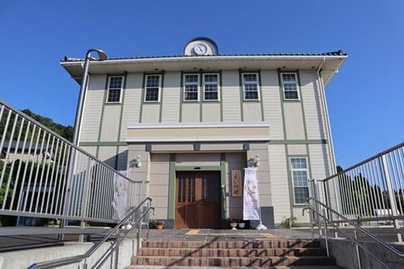
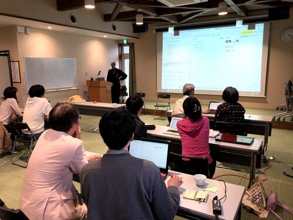
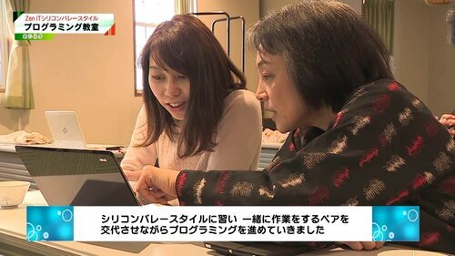
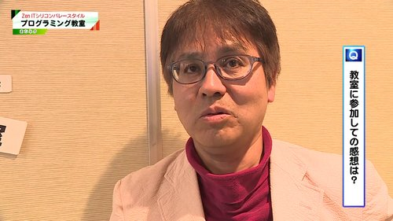

2019年12月15日（日）：ZenITプログラミング教室（初心者向け）
Sunday, December 15, 2019
9:00 AM 12:00 PM
今回のイベントは定員に達成しました。
禅の里永平寺町で、シリコンバレースタイルのプログラミングと坐禅を一緒に体験しませんか。
今回は、永平寺町松岡にある曹洞宗のお寺「天龍寺」で坐禅を体験してから、シリコンバレーでも最先端であるペアワークのやり方で初心者向けのプログラミング教室を行います。
現在は、ZenITの創立者であるあみる氏はシリコンバレーで出張中です。向こうでZenIT活動をしながら、IT技術を磨たり、禅の修行をしたり、世界を回っているいろんな業界のすごい人達と出会ったり議論したりしています。今回は特別にシリコンバレーから最先端のリモートワークのアプリを使用し、エボリューション（進化）した内容でZenITの教室を開催します。
※前回の4月に開催されたワークショップは桜の一番綺麗な季節で、道元禅師が大本山永平寺に立ち上げる前に修行された吉峰寺と永平寺町魅力発信交流施設えい坊館で行われました。

永平寺町魅力発信交流施設えい坊館

ペアプログラミング
日時
2019年12月15日（日）9:00～12:15
集合
9時までにえい坊館で集合してください。
えい坊館 永平寺町魅力発信交流施設
〒910-1117 福井県吉田郡永平寺町松岡神明3-107
https://goo.gl/maps/FT6Y1HnGQGK2
対象
2000円（坐禅体験料、昼食代）
日程
9：00 えい坊館 集合・受付
9：15 天龍寺へ徒歩で移動
9：20 天龍寺 法話＆坐禅体験
10：15 えい坊館 ZenITワークショップ
12：00 えい坊館 お粥御膳の食事
12：30 終了
＊県外の方へ：えい坊館でお土産が買えます！「SHOJIN製品」：サクラマス寿司、精進コヒー、ごま豆腐など。特別な坐禅部屋でチームラボのデジタルアート作品「鳥道 - 黙坐」も見れますよ！
持ち物
WiFi機能付きのパソコン
参加費用
申し込み先
今回のイベントは定員に達成しました。
ご不明な点がございましたら、Sakon@ZenIT.jpまでご連絡下さい。
当日の連絡先
左近 多美江
090-2093-1964
関連リンク
ZenITプログラミング教室（初心者向け）｜ZenIT Facebook
レビュー
土田佳奈さん
・何故参加したのか？
情熱的にZenITに取り組むアミルさんの姿を見て、ぜひ体験してみたいと思い参加しました。
・当時学んだ一番印象に残ったこと
プログラミング・ペアワークともに初心者でしたが、わかりやすく丁寧な説明のおかげで楽しむことができました。合間に禅を挟むことで、心身ともにリフレッシュし、スッキリとした頭で取り組めたように感じました。プログラミングだけでなく、座禅や精進料理など、ZenITの世界観を体感できてよかったです。
・ここに参加した事をどう活かしていくか？
ITはすでに私たちの生活に欠かせない存在となっています。私自身もスマホやPCに向かう時間が増えているので、ZenITでならった心を整える時間を意識的につくり、ITとうまく付き合っていきたいです。

2019年4月14日：土田佳奈さんがペアワークでウェブサイトを作成しています。
反保昌宏さん（永平寺町在住）
・なぜ参加したのか？
永平寺3地区が合併したが、生まれ育った町が寂しく変わってゆく...。いろんな事を見て、聞いて、感じて、人とつながりたいという好奇心から参加した。
・一番印象に残ったこと
禅に対しての世界観・考え方の違い・ペアワークへの驚き。プログラミング作業に瞑想を取り入れるやり方を実際に見てパソコンへの苦手意識が少しだけ、なくなったかな～ 世界とつながるって凄い！と思った。

2019年4月14日：永平寺町テレビのインタビューに答えている反保さん
・今後どのように活かしていくか？
学んだ事は、禅ITにはあらゆる可能性が沢山ある！！禅ITで人とのつながり、永平寺町3地区同士つながり、永平寺の観光、産業、本来の生きる事の大切さ、世界と繋がるモデル地域、古くて新しい色んな事が出来る事を伝えていきたい！
勧めの宿泊
SAMMIE'S（福井駅）
つむろや旅館（永平寺町）
先生
カンザダ・あみる
ZenITの設立者
永平寺町エボリューション大使（プロファイル）
シリコンバレー出身のプロのソフト開発者（勤務履歴）
※シリコンバレーはカリフォルニア州にあるGoogleやAppleやFacebookやTeslaなどが生まれたところです。
先生
もう一人の優秀な先生を呼ぶつもりなので、後で更新します。
同意書
・今回の参加に伴う個人情報の取り扱いについては、このイベントならびに次回以降のご案内等、ZenITプログラミング教室のみに利用させていただくこととし、他に利用することはございません。
・今回のイベントならびにその移動等に関する事故・トラブル等が生じた場合、自己の責任において対処願います。
Earlier Event: October 9
NHKでのZenITの放送